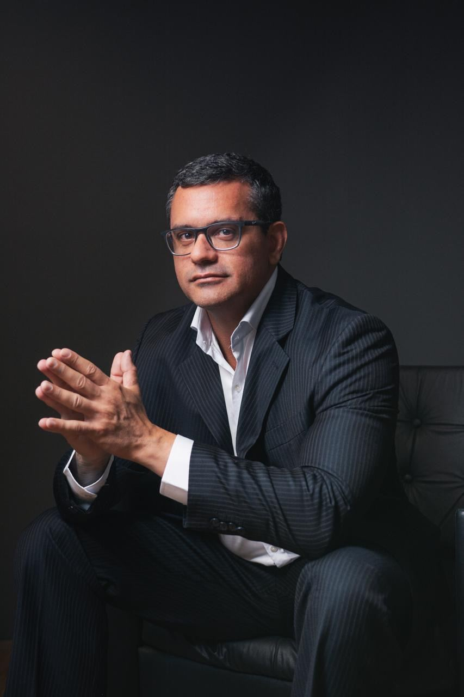
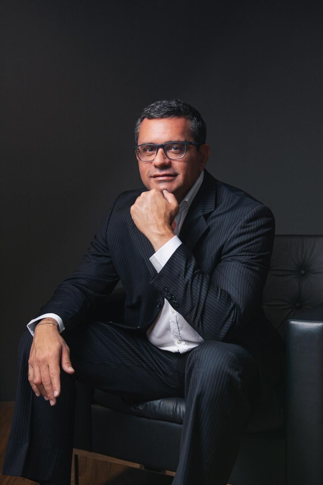
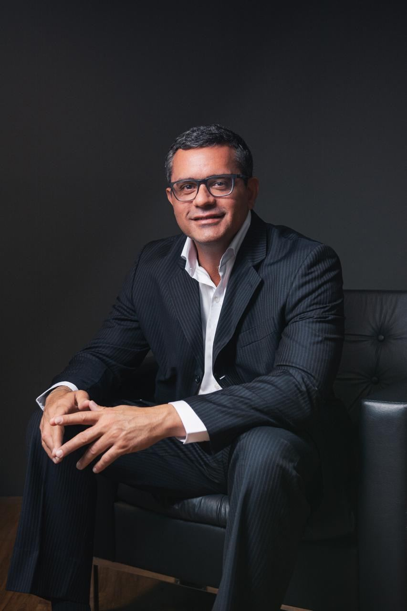
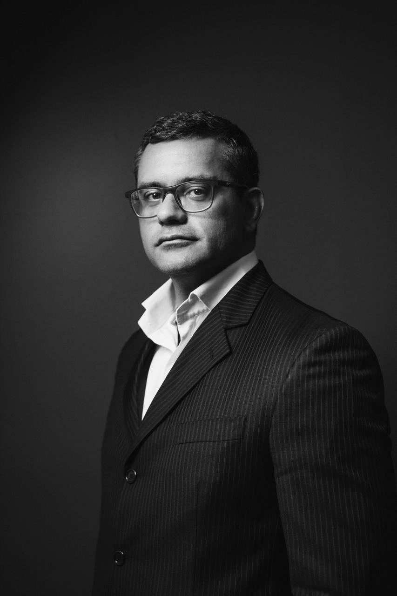

Consultoria estruturada para pequenas e médias empresas, com base em três pilares — Financeiro, Operacional e Comercial — e apoio direto na tomada de decisão do empresário.

Direcionada para pequenas e médias empresas, com foco em diagnóstico profundo, organização estratégica do negócio, definição de direcionamento claro e apoio na tomada de decisão do empresário.
Consultoria objetiva e prática para pequenas e médias empresas, atuando nos três pilares centrais do negócio — financeiro, operacional e comercial. O foco é trazer clareza, organização e resultado em curto prazo para a mudança de direção da empresa, abrindo caminho para a expansão.
Estruturação
empresas que precisam organizar finanças, processos e área comercial para crescer com solidez.
Recuperação
negócios que perderam performance e precisam de direção clara para reverter o quadro.
Preparação para expansão
empresas prontas para crescer, mas que precisam de base estruturada antes do próximo passo.
Resultado em curto prazo
clareza e organização que já trazem impacto rápido, mesmo antes da consolidação de longo prazo.
Toda a atuação é construída a partir da visão do CEO/gestor, da realidade atual da empresa e dos objetivos de curto, médio e longo prazo.
As informações analisadas em cada pilar são de responsabilidade da empresa.
Uma sequência estruturada, do alinhamento inicial à preparação para crescimento — sempre em conjunto com o CEO ou gestor da empresa.

O diagnóstico só gera resultado quando vira decisão. Por isso, a consultoria inclui acompanhamento direto do empresário, com suporte na tomada de decisão e ajustes de rota ao longo do processo.
Dois serviços com focos diferentes — e que podem caminhar juntos, dependendo do momento da empresa.
Visão integrada do negócio
Atuação prática e aplicada
Decisão baseada em dados
Caminhos claros e estruturados
Conexão com soluções reais de mercado
A consultoria não contempla a execução das ações definidas no plano estratégico. A atuação é focada em diagnóstico, estruturação e direcionamento.

Mais de 25 anos de experiência prática transformando negócios de varejo, serviços e outros segmentos em operações estruturadas e lucrativas. Atua como parceiro estratégico, mergulhando no dia a dia de cada negócio para identificar potenciais reais de crescimento.
Preencha os campos ao lado e entraremos em contato para uma primeira conversa sobre os desafios financeiros, operacionais ou comerciais da sua empresa.
Ao enviar, você será redirecionado ao WhatsApp com sua mensagem pronta. Uso confidencial.
A Consultoria Empresarial Pedro Coelho foi desenvolvida para isso — sempre com foco em resultado, clareza e aplicabilidade prática.
Agendar conversa inicial →